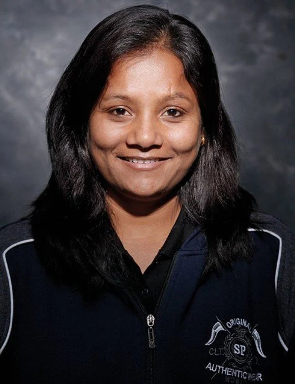
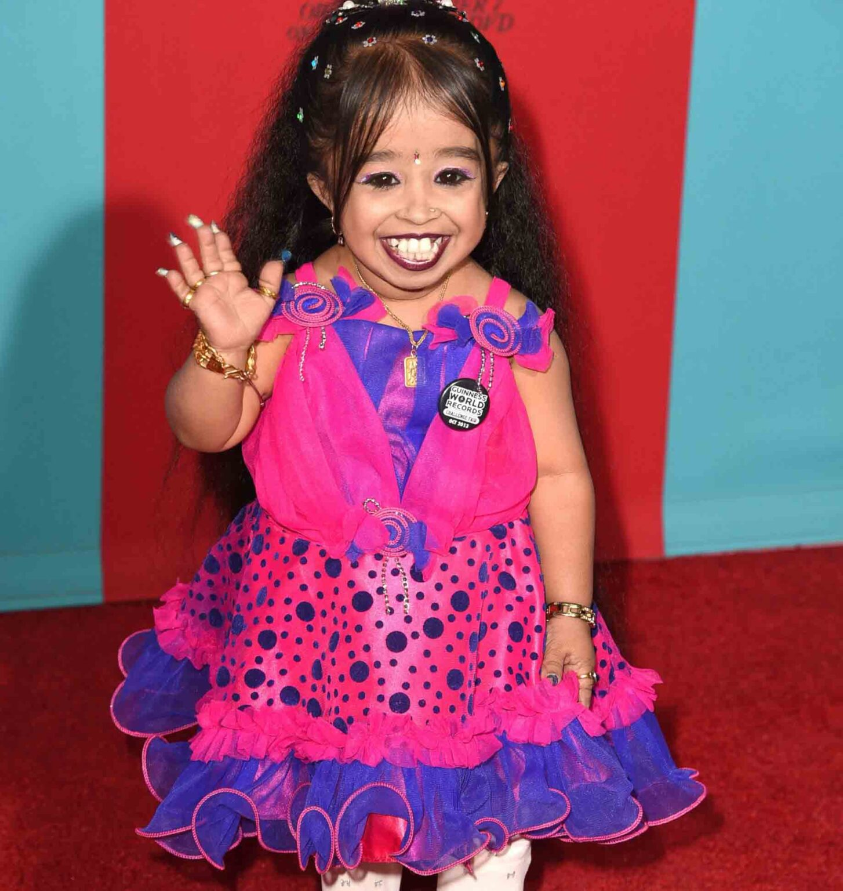
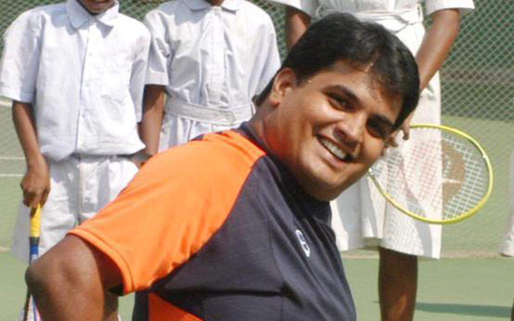
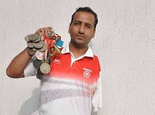
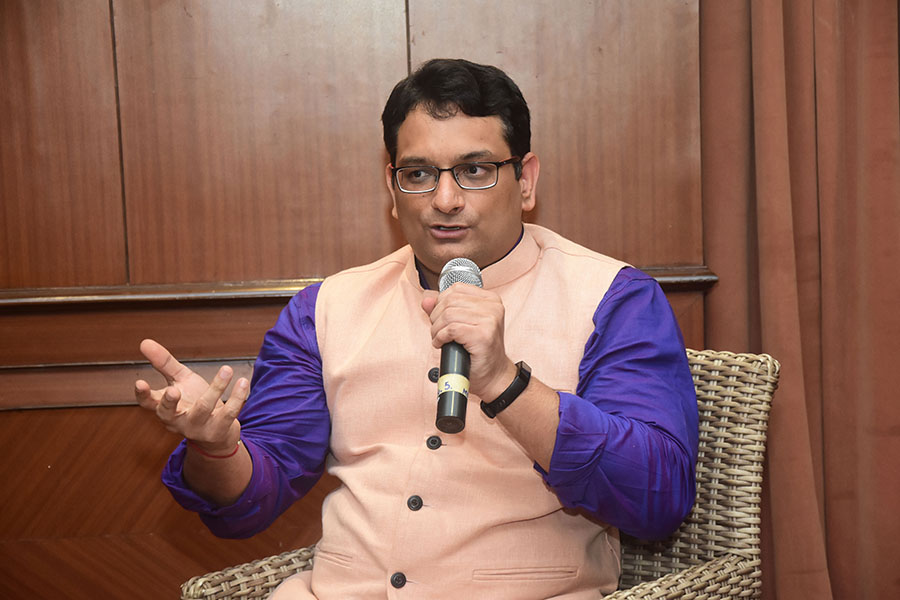
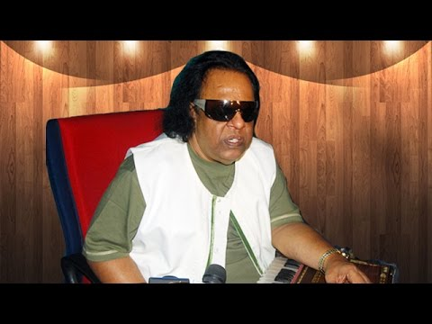
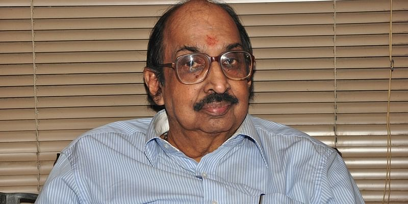
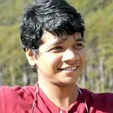

Motivation Through Inspiring Stories of Differently Abled People in India
We hardly ever talk about the disabled people in India or the differently abled
people. We focus so much on
the achievements of the others that what these people achieve despite their disabilities is often not given
the limelight it deserves. Think about a simple injury like a fractured hand or a sprained leg, the kind of
pain it leads to and how it affects your day-to-day life. It’s difficult, isn’t it? This and much more pain
and discomfort is what such disabled people in India have to live with.
Despite that, some of them have managed to achieve things that are praiseworthy. Have a look at the
inspiring stories, work and achievements of 12 such disabled people in India who taught us never to give up.
Arunima Sinha
Climbing the Mount Everest is a difficult and almost unattainable task for anyone.
But Arunima didn’t let the lack of one leg stop her from climbing atop the highest mountain peak.
Arunima lost her leg when a group of thugs pushed her from a moving train. She grew tired of people’s
sympathy and pity. Thus she went on to achieve something nobody thought an amputee could do.

Girish Sharma
Despite having lost a leg at the tender age of 2, Girish Sharma took up a career
in badminton.He has just one leg which is so strong that he not only plays the game effortlessly but
also easily covers the entire court Today he has done the country proud by bagging the Gold Medal at the
Para Olympics Asia in the game of badminton. His swift moves in the court is truly worth watching.
Sudha Chandran
This Indian actress and classical dancer needs no introduction. Born in Kerala,
this 50-year-old artist met with an accident when she was just 16. Doctors missed a small wound in her
ankle and plastered it, which later got infected and there was no alternative left but to amputate her
leg. She overcame her disability by getting a prosthetic “Jaipur Foot” and became one of the most
popular and acclaimed classical dancers of the country. Having performed Bharatnatyam internationally,
Chandran has also been a known figure in the Indian television and film industry. Having received many
awards for her amazing talent, Chandran is an inspiration to many!

Jyoti Amge
Jyoti has a normal birth
and grew normally until the age of 2 after which her growth stopped.
Jyoti has a specific form of dwarfism called achondroplasia. It stops the formation of hormones in the
body, due to which, Jyoti’s height and weight will always remain the same.
She was named the world’s smallest Teenager in 2009 by the Guinness Book of World Records.
On 10 December 2011, she was named the world’s shortest woman by the Guinness worlds records in a
ceremony at home in Nagpur.In 2012 she appeared as a guest on the reality TV show Bigg Boss season,
hosted by Salman Khan. In the same year, she also hosted an Italian TV show named Canale 5 along with
Italian actor Teo Mammucari.In 2014, her dream of becoming an actress came to life when she got a role
in the fourth season of an American television show, American Horror Story. The International Horror
Film Awards.
Harry Boniface Prabhu
He is another one of the disabled people in India who teach us to live
life optimistically. Despite becoming quadriplegic at the age of 4 Prabhu went on to train in tennis and
is one of the most highly respected wheelchair tennis players in the world today. He even won a medal at
the World Championships in 1998 and is the proud recipient of the Padma Shri.

Preethi Srinivasan
She is another one of the differently abled people in India who can inspire
you to achieve your dreams. Before losing her physical mobility through paralysis after an unfortunate
swimming accident. Preethi was the captain of the under-19 Tamil Nadu women’s cricket team. But the
physical disability didn’t tether her. She went on to become a huge support and inspiration to others
like her (who have survived spinal cord injuries and are struggling with severe physical disabilities)
by starting an NGO called Soulfree
Bharat Kumar
Bharat Kumar is another paralympics champion who has made his country proud.
Despite having born with just one hand, Bharat got himself trained in swimming and has won many medals
for the country so far.Bharat is a para-swimmer who has won 2 international titles and more than 50
medals. He has participated in tournaments in countries around the world, including England, Ireland,
Holland, Malaysia and China. Bharat is a son of a daily wager and despite challenged posed by poverty
and disability, he has managed to etch his name through glorious achievements.


Lalit Kumar ‘Samyak Lalit’
Lalit Kumar, also known as Samyak Lalit, is a polio survivor who run
Dashamlav YouTube channel. With more than 1,75,000 viewers, Lalit is highly recognized among persons
with disabilities in India. He is a well-known disability rights activist and the Chairperson of Evara
Foundation. Lalit is the author of Vitamin Zindagi, one of the best inspirational books ever written in
Hindi, wherein he has described his life with polio in India. He is a National Award (Role Model) winner
for Persons with Disabilities and has featured in numerous instances on national television, radio,
newspapers, magazines and websites.
Ravindra Jain
Though not alive today, Ravindra Jain’s name needs to be mentioned in the list of
differently-abled people in India who achieved great success. He was born with visual impaired but that
didn’t stop him from pursuing his love for music which later he made a successful career out of.


H Ramakrishnan
He is one such differently-abled people in India who went on to become a big name
in the music industry. He fell victim to polio at a young age because of which both his legs were
affected. Despite having faced struggle at almost every point in his life, he made a successful career
as a journalist for 40 years and is currently the CEO of SS Music television channel. His music talents
have been recognized at various platforms too. He even runs a charitable organization called Krupa which
helps out specially-abled.
Sai Prasad Vishwanathan
The desire and spark of adventure in Sai did not die despite being
paralyzed from the waist below. He became the first Indian with disability to undertake skydiving, an
adventure sport that many fears to undertake.
